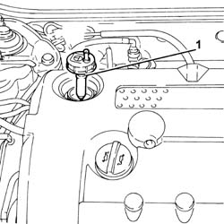
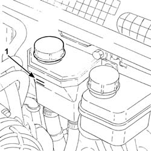
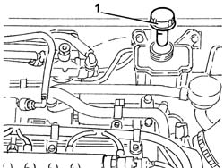
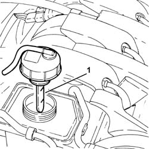

0010T71 POWER STEERING FLUID CHECK LEVEL AND TOP UP IF NECESSARY
- Path
- Procedures > 00 MAINTENANCE > 0010 UNITA' NUOVE E MANUT. PROGRAMMATA > 0010T VEHICLE OIL AND FLUIDS > 0010T71 POWER STEERING FLUID CHECK LEVEL AND TOP UP IF NECESSARY
- Kind
- repair procedure (removal / refitting; the operation number is the code)
- Applies to
- all engines; all production periods
- Interactive page
- https://sloeber94.github.io/elrnDB-aGt/en/#/125000847
Applies to: engines: 2.0 JTS; all production periods
1. Check that the power steering fluid level correponds to the upper notch (maximum level) on the dipstick attached to the reservoir cap.

Applies to: engines: 2.0 JTS; all production periods
If the fluid level in the tank is below the MAX mark, top up with specified fluid.
Type | Component | Description | Qty. | |
|---|---|---|---|---|
- | Fluid [I] | POWER STEERING HYDRAULIC SYSTEM | TUTELA GI/A | 1.2 |
Start the engine and wait for the fluid level in the tank to stabilise.
With the engine running, turn the steering wheel from right to left fully several times.
Top up until the fluid level reaches the MAX mark and then refit the plug.
Applies to: engines: 3.2 V6; all production periods
1. Check that the power steering fluid level correponds to the MAX notch on the reservoir or the upper notch (maximum level) on the dipstick attached to the reservoir cap.

Applies to: engines: 3.2 V6; all production periods
If the fluid level in the tank is below the MAX mark, top up with specified fluid.
Type | Component | Description | Qty. | |
|---|---|---|---|---|
- | Fluid [I] | POWER STEERING HYDRAULIC SYSTEM | TUTELA GI/A | 1.2 |
Start the engine and wait for the fluid level in the tank to stabilise.
With the engine running, turn the steering wheel from right to left fully several times.
Top up until the fluid level reaches the MAX mark and then refit the plug.
Applies to: engines: 1.9 JTD 16V; all production periods
Proceed with removal Refer to op. 1016A10 SOUNDPROOFING COVER - R&R
.
1. Check that the power steering fluid level correponds to the MAX notch on the reservoir or the upper notch (maximum level) on the dipstick attached to the reservoir cap.

Applies to: engines: 1.9 JTD 16V; all production periods
If the fluid level in the tank is below the MAX mark, top up with specified fluid.
Type | Component | Description | Qty. | |
|---|---|---|---|---|
- | Fluid [I] | POWER STEERING HYDRAULIC SYSTEM | TUTELA GI/A | 1.2 |
Start the engine and wait for the fluid level in the tank to stabilise.
With the engine running, turn the steering wheel from right to left fully several times.
Top up until the fluid level reaches the MAX mark and then refit the plug.
Proceed with refitting Refer to op. 1016A10 SOUNDPROOFING COVER - R&R
.
Applies to: engines: 1.8 T.SPARK; all production periods
- Check that the power steering fluid level correponds to the MAX notch visible on the reservoir or the upper notch (maximum level) on the dipstick attached to the reservoir cap.

Applies to: engines: 1.8 T.SPARK; all production periods
- If the fluid level in the tank is below the MAX mark, top up with specified fluid.
Type | Component | Description | Qty. | |
|---|---|---|---|---|
- | Fluid [I] | POWER STEERING HYDRAULIC SYSTEM | TUTELA GI/A | 1.2 |
- Start the engine and wait for the fluid level in the tank to stabilise.
- With the engine running, turn the steering wheel from right to left fully several times.
- Top up until the fluid level reaches the MAX mark and then refit the plug.
Topics that link to this page (21)
- H10 STEERING HARD / (STEERING IN BOTH DIRECTIONS)
- X30 POWER ASSISTED STEERING SYSTEM FLUID LEAKS
- 0010K20 20,000KM SERVICE COUPON, EMISSION CONTROL VERSION
- 0010K40 40,000KM SERVICE COUPON, EMISSION CONTROL VERSIONS
- 0010K60 60,000KM SERVICE COUPON - EMISSION CONTROL VERSIONS
- 0010K80 80,000KM SERVICE COUPON - EMISSION CONTROL VERSIONS
- 0010M01 100,000KM SERVICE COUPON, EMISSION CONTROL VERSIONS
- 0010M20 120,000KM SERVICE COUPON, EMISSION CONTROL VERSIONS
- 0010M40 140,000KM SERVICE COUPON - EMISSION CONTROL VERSIONS
- 0010M60 160,000KM SERVICE COUPON - EMISSION CONTROL VERSIONS
- 0010M80 180,000KM SERVICE COUPON - EMISSION CONTROL VERSIONS
- 1004B10 POWER UNIT WITH MANUAL GEARBOX - R + R
- 1004B24 POWER UNIT WITH MANUAL GEARBOX WITH HYDRAULIC SELECTION - R R
- 4130A10 POWER STEERING BOX - R+R - CHECK TOW-IN IF NECESSARY SEPARATELY - INCLUDES BLEEDING
- 4130B20 POWER STEERING PUMP R R
- 4130B34 SUPPLY PIPE FROM FLUID RESEVIOR TO POWER STEERING PUMP R R
- 4130B40 OUTLET PIPE FROM PUMP TO POWER STEERING CASE R R
- 4130B49 RETURN PIPE FROM POWER STEERING CASE TO HEAT EXCHANGER PIPE R R
- 4130B52 HEAT EXCHANGER PIPE - R+R
- 4130B54 RETURN PIPE FROM HEAT EXCHANGER PIPE TO POWER STEERING FLUID RESEVIOR R R
- 4130B72 RETURN PIPE FROM POWER STEERING CASE TO POWER STEERING FLUID RESEVIOR R R